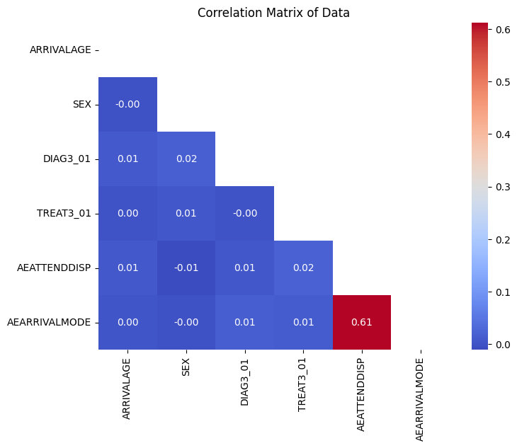

Synthetic Data for the NHP Model
An Internship Project at The Strategy Unit, NHS
Aug 14, 2025
Introduction
The Challenge of Healthcare Data
- Real patient data is sensitive and highly restricted.
- This makes sharing and collaboration difficult.
- The NHP model is open source, but the data is not.
Why Synthetic Data?
- Privacy: Protects patient confidentiality.
- Accessibility: Enables broader research and testing.
- Reproducibility: Allows anyone to run and verify the model.
- Bias Mitigation: Opportunity to create fairer datasets. Biased data leads to biased models.
Current NHS Artificial Data Limitations
Problem: Lost Relationships
- The existing NHS artificial data excels at privacy.
- However, it struggles to preserve complex relationships between attributes.
- Example: It might tell you “how many 49-year-olds” and “how many females,” but not “how many 49-year-old females with diabetes in a specific postcode.”
Impact on NHP Model
- NHP model relies on multivariate relationships for accurate demand prediction.
- Without these, models trained on current artificial data would be inaccurate.
- Obstacle to identifying which patients are candidates for a mitigator.
- The inability to simulate real-world interventions makes the output for demand prediction unreliable and invalid.
My Internship Project
This presentation will cover
- The Problem: The limitations of the current NHS artificial data.
- The Solution: The methodology I developed to inject realistic relationships.
- The Results: The enhanced dataset and a correlation matrix to visualise the data.
- The Impact: The value this new data brings to the NHP model.
- What Could Have Been Done Better: An exploration of advanced techniques like Generative Adversarial Networks (GANs).
Methodology
Approach
- This project will use a rule-based data synthesis approach to address the limitations of the existing artificial HES data.
- Rather than generating a new dataset from scratch, the approach is to add relationships to the existing 10,000-row artificial dataset.
- This provides a practical solution that fits within the project timeline and adheres to the requirement of not using real HES data.
Input Data
- The project will use the existing, non-disclosive A&E 10,000-row artificial HES dataset created by NHS England.
- The dataset consists of 10,000 rows and 165 attributes.
- The dataset includes a variety of attributes related to emergency care.
Key columns used in this project
- AEATTENDDISP: The patient’s discharge status.
- AEARRIVALMODE: How the patient arrived at the facility.
- DIAG3_01: The patient’s primary diagnosis.
- SEX: The patient’s gender.
Process
The process for enhancing the artificial dataset followed these steps
Initial Data Validation
The project began by generating a correlation matrix in Python to confirm the lack of meaningful linear relationships between numerical attributes. This step provided the clear justification for the data enhancement.

The Data Before Data Injection
Relationship Identification & Enhancement
Based on the requirements of the NHP demand model, two key inter-column relationships were identified:
- An Ambulance Rule: If AEARRIVALMODE is 1 (arrival by ambulance), then AEATTENDDISP is set to 1 (hospital bed).
- A Female Rule: If DIAG3_01 is 28 (Obstetric conditions) or 29 (Gynaecological conditions), then SEX is set to 2 (female).
- Using Python and the Pandas library, a script was developed to create realistic relationships in the artificial dataset.
Output & Validation
The final output will be an enhanced artificial HES dataset. The dataset was validated to confirm that the newly created relationships were present by generating a new correlation matrix.This confirms that the newly created relationships are present while also ensuring the data remains non-disclosive and suitable for the open-source NHP model.

The Data After Data Injection
The Results
Before:
The initial correlation matrix showed no meaningful relationships. This confirmed the need for data enhancement.
After:
The new correlation matrix confirms that the rules successfully injected relationships. The correlation values for the target columns have significantly increased.
Conclusion
Summary of Findings
- The Problem: The existing NHS artificial data, while great for privacy, was not suitable for the NHP model due to a lack of meaningful relationships between attributes.
- The Solution: A rule-based data synthesis approach was used to inject two rules, successfully creating these relationships.
- The Result: The enhanced dataset was validated to confirm the new relationships, making it a reliable and non-disclosive resource for the NHP model.
- The Impact: This work enables the NHP model to produce more accurate demand predictions and provides a foundation for identifying which patients are candidates for a mitigator.
Future Works
While the rule-based approach was a practical and effective solution, future work could explore using Generative Adversarial Networks (GANs).
GANs can learn more complex, non-linear relationships that a rule-based system would miss, creating an even more realistic synthetic dataset.
Any Questions?
The slides are available publicly at aiwithash.me/synthetic-data-rough-note